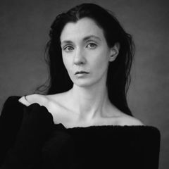
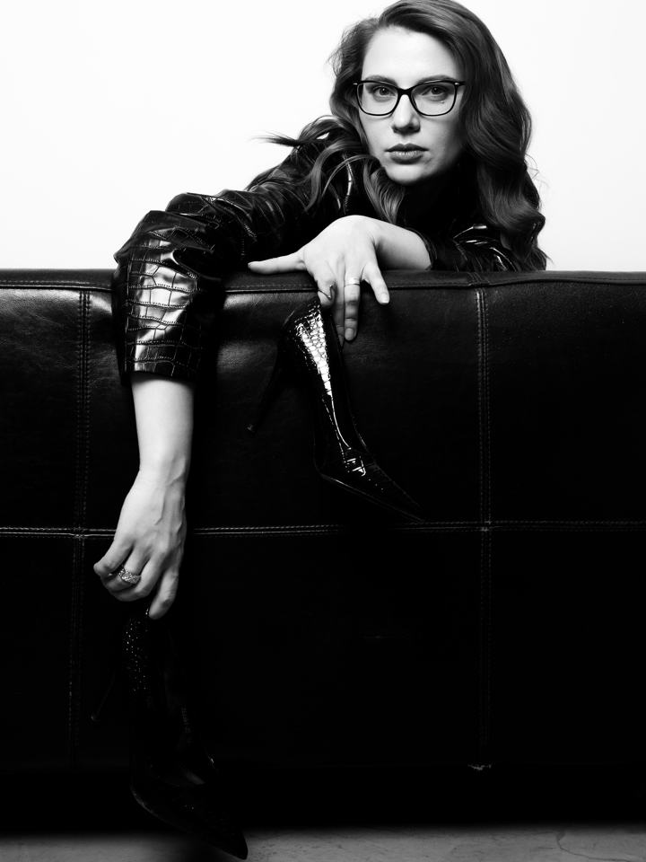
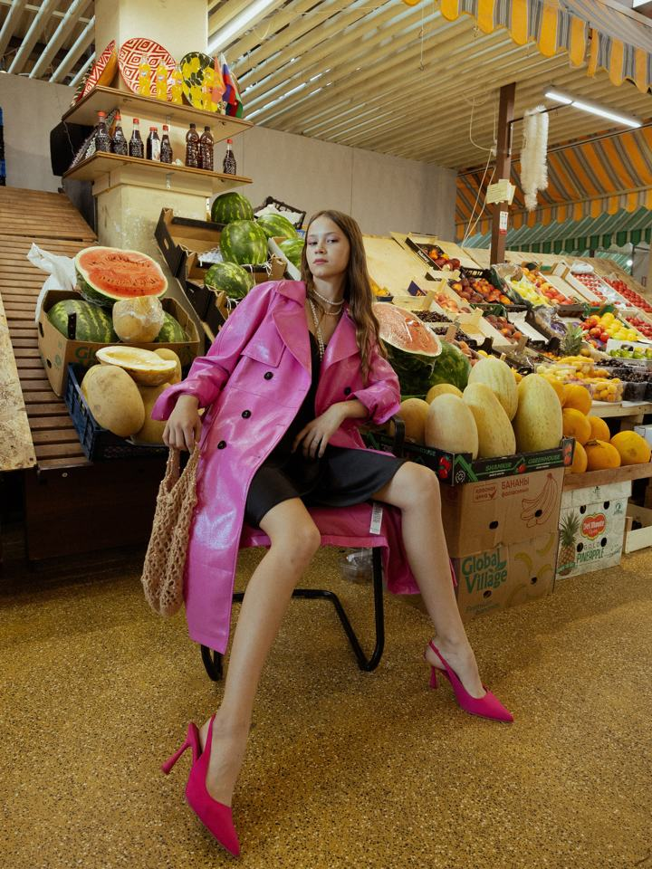

Настя · фотограф, модель, стилистНижний Новгород




Нейросеть или живая съёмка: что нужно именно тебе?
Честный тест от фотографа. 5 вопросов, и ты узнаешь, где хватит нейросети, а где нет. Плюс 3 позы под тебя от модели
Если тебе подходит нейросеть, я так и скажу
Мой честный ответ
Нейросеть и фотограф
Нейросетьрисует, как ты могла бы выглядеть
Фотографпоказывает, как ты выглядишь, когда тебе хорошо
Нейросетьпридумывает одежду и детали
Фотографснимает твою вещь, твой товар, твои украшения
Нейросетьждёт, что ты сама опишешь образ
Стилистсобирает образ и приносит гардероб
3 позы под тебя от модели
Эти позы пригодятся и для селфи. На съёмке я ставлю их сама: работаю моделью с 2015 года